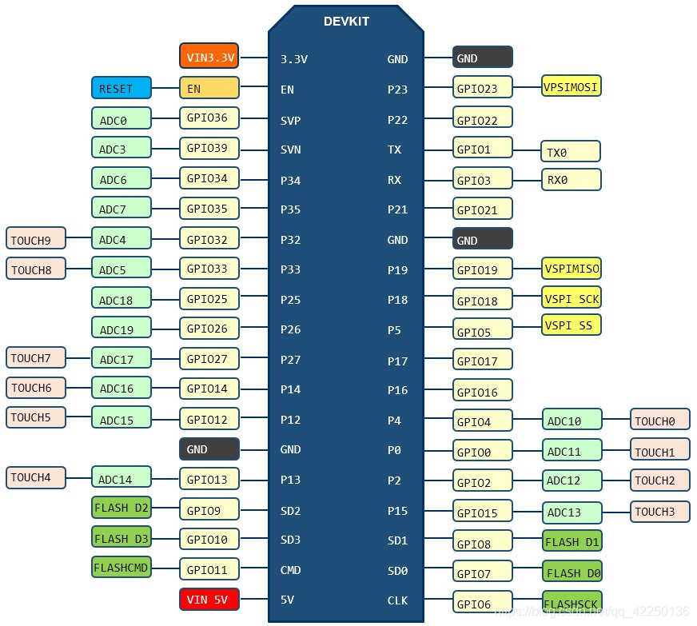
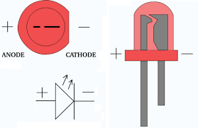
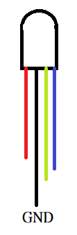

進行物聯操作時，要確定所有的零件極性(正極或負極)與負載(超載會燒壞零件)，電流由正極流向負極，接好所有線路，確認後再進行通電(接上USB)，這樣可以避免因操作不當，將開發版或零件燒毀，要進行線路的更動時，一定要將開發版斷電(拔除USB連接線)。
設計之前，必須了解開發版的功能及其對應腳位，下圖為課程使用ESP32開發版(NodeMCU 32s)腳位圖：

5V(紅色)及3.3V(橘色) 正極(高電位)，接地(負極或低電位)以 GND(黑色) 表示。電流由高電位流向低電位，ESP32 GPIO接腳輸出為直流電，電壓為3.3V。請注意：不可以將GPIO接腳直接接地，因為中間沒有阻抗，會將開發版燒毀。
第一個Arduino IDE程式讓開發版上預設LED以1秒間格進行閃爍。請開啟Arduino IDE後，選擇 檔案/範例/01.Basics/Blink 。
Arduino IDE使用C語言進行開發版控制。程式中//代表註解，用於加上程式說明文字，同時C語言區分英文字大小寫，因此在撰寫程式時，請注意命令大小寫。Arduino IDE程式包含兩個無傳回值(void)函數 setup()與loop()，setup()用於開發版啟動時的設定，只會執行一次，之後開發版將重複執行loop()函數中的命令，對C語言不熟悉的同學，可以操考Google中相關網站或參考C語言複習網站。
程式首先執行setup()函數中命令，之後會重複執行loop()函數中的命令，兩個函數的所有命令皆包含於 { }中。首先setup()函數執行 pinMode(LED_BUILTIN,OUTPUT);，pinMode命令用於設定GPIO腳位的模式，需要兩個代入值分別為 GPIO腳位 與 腳位模式(INPUT或OUTPUT)，程式中 LED_BUILTIN 為系統預設代表 GPIO2腳位，使用者可以用 2 取代 LED_BUILTIN，因此執行完 setup() 之後，開發版將GPIO2腳位設定為可輸出。
接下來開發版將重複執行 loop() 中命令，loop()中第一個命令為 digitalWrite(LED_BUILTIN,HIGH); ，digitalWrite命令需要兩個代入值分別為設定輸出的 GPIO腳位 與 輸出值(HIGH或LOW)，當輸出值為 HIGH 時，會開通對應的接腳，電流會從接腳輸出。當輸出值為 LOW 時，則關閉對應接腳的電流輸出。delay命令用於設定延遲，讓程式暫停一段時間，delay命令代入數字代表延遲時間，時間以毫秒(千分之一秒)表示，因此delay(1000)代表延遲1秒，因此Blink程式在開始 setup() 設定輸出腳位後，loop() 程式會開通開發版預設LED的GPIO接腳後，延遲1秒後，將其關閉並延遲1秒，之後繼續執行loop()函數。
了解如何開關開發版上LED之後，請將開發版USB連接線拔除，接下來我們將進行LED線路連接。LED有分正負極(如下圖)，長腳為正極，短腳為負極，電源由LED正極進入再由LED負極流出，LED有最大電流限制，超過電流會導致LED燒毀，所以接LED時需要再LED正端或負端串接一個電阻作為LED保護用。

請選擇可用GPIO腳位並修改上一個閃爍程式來控制外部LED，LED接線如下圖，當開啟GPIO22腳位電流經過 LED正極 - LED負極 - 電阻 - GND(接地)。確定線路無誤後，再將開發版接上USB。
脈衝寬度調變(PWM)是一種利用數位訊號模擬類比訊號的方式。通常可以用於調整燈光的亮度、馬達的轉速、RGB LED 的配色、螢幕亮度控制、喇叭的大小聲/聲音頻率等。ESP32要使用PWM須執行下列兩個步驟。
ledcSetup(通道,頻率,輸出週期)與ledcAttachPin(GPIO接腳,通道) 命令，ledcSetup用於設定要使用的PWM通道，ESP32總共有16通道(0到15)，頻率一般設為5000，輸出週期值可以從1到16，代表輸出週期位元數，通常我們輸出週期會設為 8 (代表有256種大小，0到255)。ledcWrite(通道,週期值) 命令即可控制LED亮度，如果當初 ledcSetup 輸出週期值設8，則週期值 0 代表 關閉，週期值 127 代表 一半亮度，週期值 255 代表 全亮。全彩(RGB)LED接腳如下圖：
請將GND接至開發版GND腳位，另外選擇三個GPIO腳位來串接紅(R)、綠(G)、藍(B)，開關或PWM設定同單顆LED。
接上開發版後選擇 工具/序列埠監控視窗可開啟如下圖監控視窗，使用者可藉由命令 Serial.print()或Serial.println() 將答案輸出序列埠監控視窗。要使用序列埠，請在 setup()程式中設定 Serial.begin(序列埠傳輸速率); ，一般傳輸速率設為 115200，同時序列埠監控視窗下方速率請設成相同的速率(如115200baud)，否則就無法溝通。
Serial.begin(115200); ，接下來輸入命令 Serial.print("設定序列埠速度"); ，開啟序列埠監控視窗並確定傳輸速率為 115200baud，之後進行程式燒錄並觀看序列埠監控視窗輸出結果。
透過讀取電容接觸感測(Touch)腳位值來判定使否有接觸，實驗分為兩個部分，首先我們要知道當手接觸電容接觸感測(Touch)腳位時的數值是多少，接下來利用這個數值當作判斷基準來開關LED。要讀取電容接觸感測(Touch)腳位值使用 touchRead(腳位) 命令即可讀出該腳位現在值。